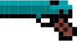

| Basicos
 solo es de uso decorativo en el inventario (a veces)
 El tiburon da un bonus de vida del 30% El tiburon da un bonus de vida del 30%
|
Intermedios
 El palo golpeador de parejas felices, hace daño en area y mas si hay una pareja enfrente El palo golpeador de parejas felices, hace daño en area y mas si hay una pareja enfrente
 El circulo de intermedio solo aumenta en un 25% del daño magico El circulo de intermedio solo aumenta en un 25% del daño magico |
Avanzados
 El Circulo avanzado sirve para aumentar el poder del portador en un 50% El Circulo avanzado sirve para aumentar el poder del portador en un 50%
 La espatula dorada aumenta el ataque en 25% La espatula dorada aumenta el ataque en 25%
|
Especiales
 El corazon del druida hace que la vida del sujeto aumente en 300% El corazon del druida hace que la vida del sujeto aumente en 300%
 La hoja oculta hace que el daño critico sea efectivo en un 100% de las veces La hoja oculta hace que el daño critico sea efectivo en un 100% de las veces
|